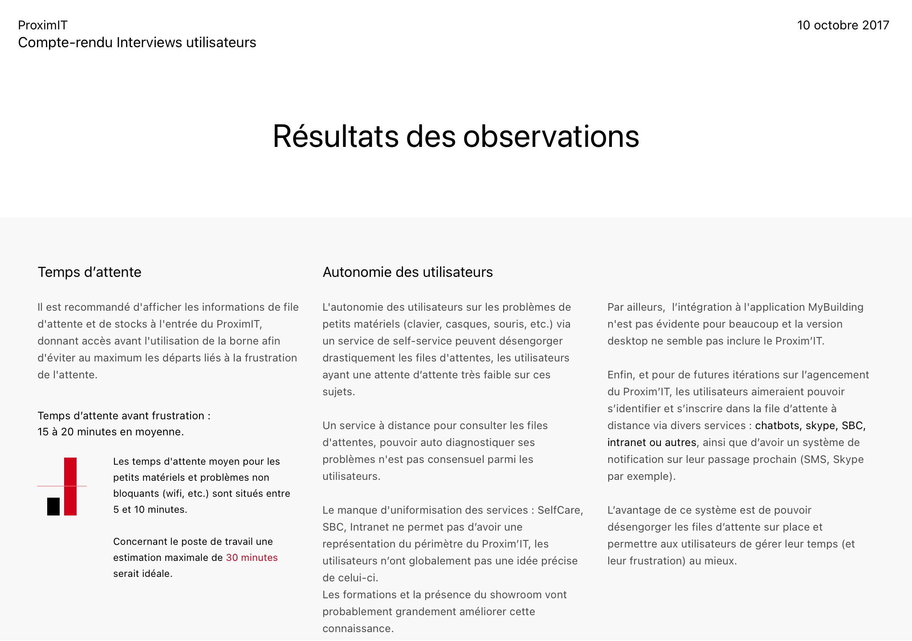
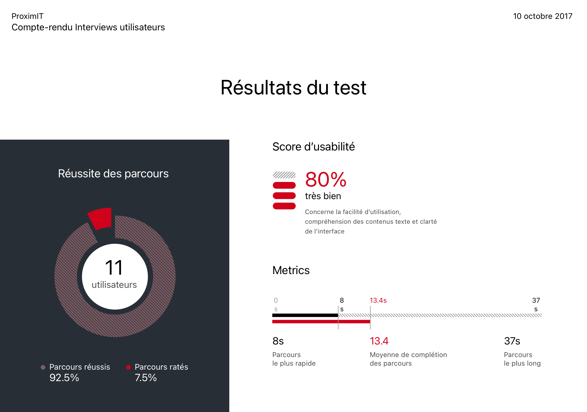
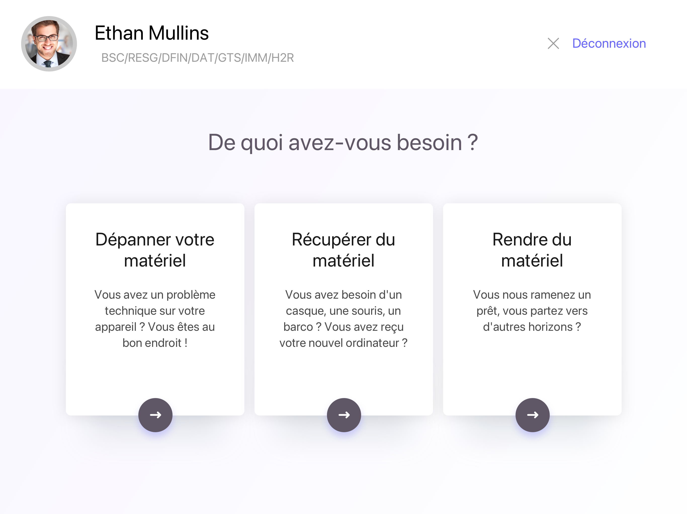

Proxim IT
Client : Société Générale
Année : 2017 (1 mois)
Contexte
Le support technique pour les collaborateurs internes se divise en de multiples points de contact dont un réseau de lieux physiques : les "Proxim'IT".
Ces espaces ont de nombreuses missions : du prêt de matériel au dépannage de PC en passant par les accessoires. Malgré une satisfaction de bouche à oreille élevée, les Proxim'IT souffrent d'une lenteur dans le service rendu. Dans certains cas, obtenir un simple casque audio peut prendre jusqu'à 1h puisque les techniciens fonctionnent sur le modèle : "premier arrivé, premier servi".
Une feature team de 4 personnes sur 4 sprints : un PO (Product Owner), un UX, un développeur et un coach Agile pour délivrer le MVP.
Objectifs & mesures de succès
Première étape, une recherche sous forme d'enquête a été menée pour identifier les principales problématiques exprimées par les utilisateurs et les techniciens.
Pour les techniciens :
Principales remarques : le temps administratif trop long (un dossier prend 8 minutes à remplir), 15 applications différentes selon le besoin sans aucune centralisation des données et aucun moyen de capitaliser sur les solutions obtenues par ses collègues (Knowledge Management).
Mesure de succès : moins de 2 minutes pour remplir le dossier.
Pour les collaborateurs :
Temps d'admission trop long, de nombreux collaborateurs évitent de passer au Proxim'IT uniquement sur un a priori négatif de temps de traitement. Aucune visibilité ou moyen de connaitre le temps d'attente avant de se déplacer (pour certains collaborateurs, le service peut se trouver à 10 minutes de marche). Peu de connaissances sur les missions du service.
Mesure de succès : un temps d'attente idéal de moins de 5 minutes et jusqu'à 15 minutes maximum.


Le MVP (Most Valuable Product)
Pour répondre aux besoins des collaborateurs et des techniciens : nous avons co-créé avec le Product Owner du projet et un groupe d'utilisateur le prototype d'une borne et d'un écran d'accueil pour donner de la visibilité.
Un soin particulier a été apporté sur l'accessibilité des outils et l'architecture de l'information.

Tester le MVP et imaginer le MLP (Most Lovable Product)
Toujours sous forme "guérilla", des tests sont organisés devant l'un des Proxim'IT pour s'assurer de la viabilité du MVP et travailler sur des éléments qui apporteront une expérience au delà du fonctionnel.


A la suite des tests, les animations de la borne et de la file d'attente ont étés produites en vue de l'intégration.
J'ai également créé une série de sons testés sur les semaines suivantes pour trouver le meilleur indicateur sonore d'appel du collaborateur suivant. Il a été adapté pour être suffisamment reconnaissable malgré le bruit ambiant du lieu.
Résultats et itérations suivantes
Après trois mois de mise en place, la satisfaction utilisateur est passée de 2.5 à 4 (mesure CSTAT sur 5) et en augmentation. Les techniciens remplissent un dossier en moins de 3 minutes, soit plus 50% de réduction, et les itérations suivantes adresseront plus largement l'amélioration des interfaces côté technicien.
Le temps d'attente moyen pour les collaborateurs est de 3 à 5 minutes (jusqu'à 25 minutes dans les heures de très grande affluence) et les demandes sont à présent qualifiées, les techniciens peuvent organiser leur activité en fonction du nombre et type de demandes.
La prise de rendez-vous a aussi été ajoutée, depuis le Digital Workplace interne, qui permet de ne plus se déplacer inutilement.